This is generic learning material.
Claude Certified Architect - Professional (CCAR-P)
These are the complete study materials for the Anthropic professional-tier Claude certification. They include seven domain volumes, taught from first principles, with a 106-question practice bank and a system design guide. The materials follow the official exam guide v1.0, effective July 2026. Claude is a large language model: it reads text as tokens and predicts the next token in the sequence. A Claude architect assembles models, instructions, context, and tools into systems that meet cost, latency, quality, and safety constraints together. This exam tests that judgment, not feature recall.
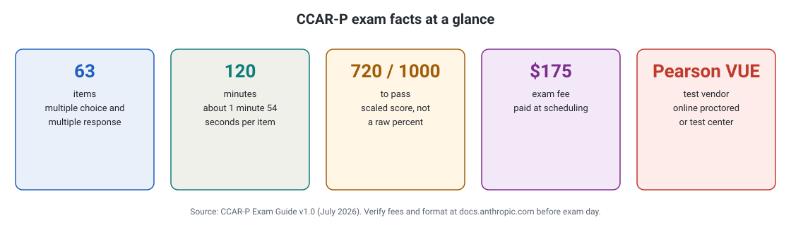
- Read the five cards left to right: item count, time, passing score, fee, vendor.
- Divide 120 minutes by 63 items to get your per-item budget: about 1 minute 54 seconds.
- The 720 score uses a scale, not a raw percent. Aim well above the line.
What breaks if a part fails: If you walk in without the format memorized, the clock and the scoring surprise you instead of the questions.
Start with the prereq volume. Then complete D1 through D7 in order. After that, complete the question bank.
If you have little time, the crash course compresses all seven domains. It puts them in exam-weight order. Then use the bank for timed repetitions.
Prerequisites
Prereq. Claude Developer Fundamentals
start hereIf the Claude API is new to you, read this material first. It covers keys, Messages, multi-turn, sampling, and tool use. It also covers thinking, caching, batches, embeddings, the model lineup, MCP, Claude Code, streaming, rate limits, errors, evals, safety, and prompt engineering. It includes a capstone that connects all of these into one production application. The exam assumes that you know this part of the information.
Domain volumes
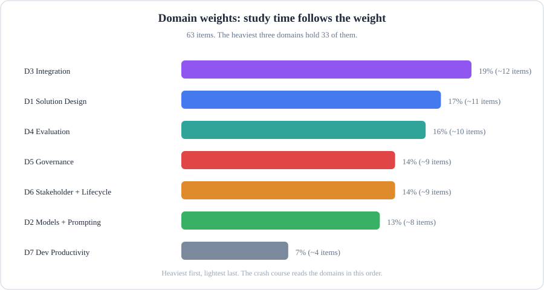
- D3 integration is the heaviest at 19 percent. D7 developer productivity is the lightest at 7 percent.
- D1, D4, D2, D5, and D6 are all in the 13 to 17 percent range. You must not skip any domain. D3 and D1 give the most items per hour studied.
- The exam has 63 items. You have 120 minutes. This is about 1 minute and 54 seconds per item.
If you study all domains equally, the 7% domain gets the same time as the 19% domain. This will affect your score. What breaks if a part fails:
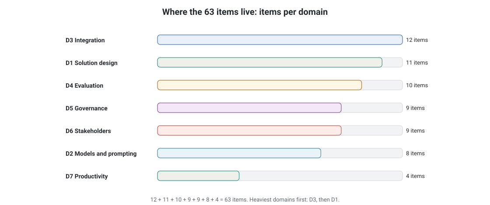
- Read the bars top to bottom, heaviest domain first.
- Add them up: 12 + 11 + 10 + 9 + 9 + 8 + 4 = 63.
- Study in this order. D3 and D1 give the most items per hour.
What breaks if a part fails: If you study all domains equally, the 7% domain eats the same hours as the 19% domain. Your score pays for it.
1. Solution Design and Architecture
17%This domain covers the business problem to Claude solution. It includes end-to-end architectures and workflow versus agentic patterns. It also covers multi-agent orchestration, decomposition, business value pillars, and SLAs.
2. Claude Models, Prompting, and Context
13%This domain covers model selection trade-offs and system prompts. It includes zero-shot, few-shot, and chain-of-thought prompting. It also covers context management, prompt caching economics, and Skills.
3. Integration
19%This domain covers tool and agent configuration and authentication gaps. It includes accuracy-latency trade-offs and observability at scale. It also covers RAG pipelines, retrieval strategies, MCP versus API versus agent-to-agent, and progressive discovery.
4. Evaluation, Testing, and Optimization
16%This domain covers evaluation metrics, datasets, and mixed methods. It includes LLM-as-judge and A/B testing. It also covers diagnosing failures, token/latency/cost optimization, and observability.
5. Governance, Safety, and Risk Management
14%This domain covers guardrails and failure modes. It includes human-in-the-loop, GDPR, HIPAA, and FedRAMP. It also covers Zero Data Retention, bias and fairness, and Anthropic's safety posture.
6. Stakeholder Communication and Lifecycle
14%This section covers structured discovery, communicating trade-offs, SLAs and expectation alignment, architecture documentation, and lifecycle management.
7. Developer Productivity and Enablement
7%This section covers Claude Code rollout, permissions and hooks, MCP distribution, AI-assisted workflows, secrets governance, debugging, and runbooks.
The turn from learning to proving. Seven volumes teach the judgment. The pages below test it: the bank for timed repetitions, the system design guide for scenario practice, and the crash course for final review.
Practice and Reference
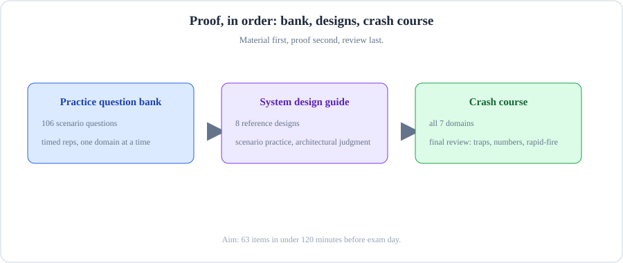
- Learn a domain from the full page. Quiz yourself from the question bank immediately.
- Repair the weak spot that the quiz found. Make the repair in the full page. Do not make the repair in your notes.
- Re-quiz the same weak spot. Then take the timed mock examination. Repeat the loop until the mock examination says to stop.
[Practice and Reference] What breaks if a part fails: If you reread instead of quizzing, familiarity feels like knowledge. The mock is the first honest signal.
Practice question bank
106 Q106 scenario-style questions, weighted like the exam: 29 easy, 49 medium, 28 hard. They mix multiple-choice and multiple-response formats. Each question explains why the correct answer is correct and why each distractor is wrong. The bank also covers exam-day strategy.
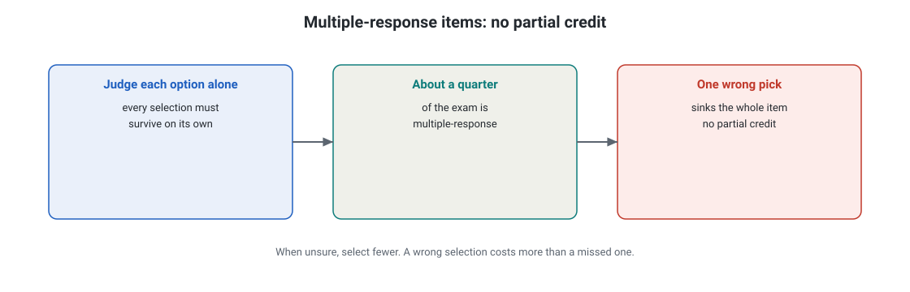
- Card 1: test every option on its own merits.
- Card 2: about a quarter of the exam works this way, so the habit matters.
- Card 3: one wrong selection zeroes the item.
What breaks if a part fails: If you select an option you are unsure about, the wrong pick costs more than the missed pick.
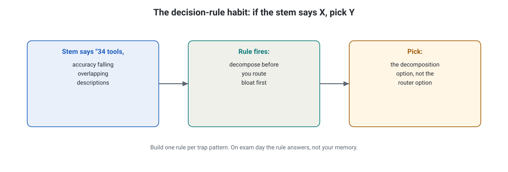
- Left card: the stem tell, in the question's own words.
- Middle card: the rule that the tell triggers.
- Right card: the option the rule points to.
What breaks if a part fails: If you skip the middle card and jump from tell to option, the trap option looks just as good.
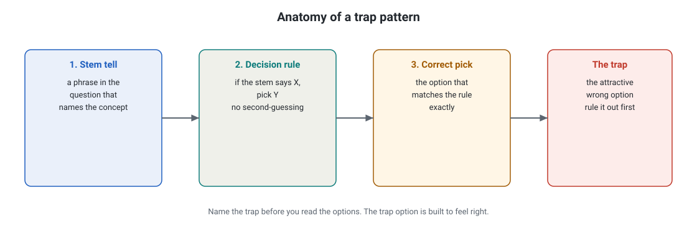
- Card 1: find the phrase in the stem that names the concept.
- Card 2: recall the rule for that concept: if the stem says X, pick Y.
- Card 3: choose the option that matches the rule exactly.
- Card 4: identify the attractive wrong option and eliminate it before you decide.
What breaks if a part fails: If you read the options before naming the trap, the trap option does its job.
System design guide
8 designsThe system design guide has eight end-to-end reference designs. These designs include production RAG, tool-using agents, and multi-agent orchestration. They also include production MCP, caching economics, multi-cloud failover, and evals-as-code. The guide also covers the cost, latency, and quality trilemma.
Crash course
1 volumeThe crash course has one dense volume. It covers all seven domains in exam-weight order. It includes decision rules and must-memorize numbers. It also includes 25 trap patterns and 25 rapid-fire questions. The course has a pre-exam checklist. It is sufficient for all 63 exam items.
How the pieces fit. Use the material first. Then, do the proof. Review the material last. The plan below shows a two-week schedule for this.
How to use this guide
- Skim the exam facts above. This will show you the weights and the question style.
- Study the domain volumes in order. Each unit ends with a "How they will ask this" box. Read the box two times.
- Work the question bank one domain at a time. Then, work the mixed questions. Try to finish 63 items in less than 120 minutes.
- Use the system design guide. This will help you build architectural judgment. The CCAR-P exam tests this.
- Check the model pricing and the feature availability in the official documents before exam day. The marked figures in the volumes are examples only.
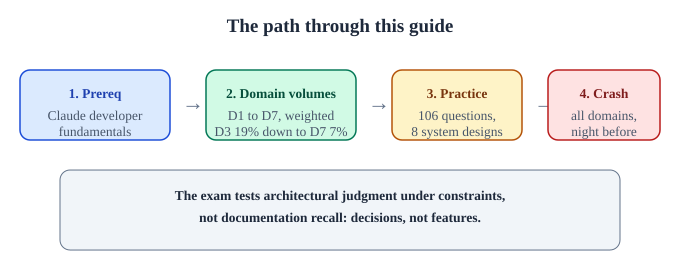
What helps (from candidates who passed)
The exam tests architectural judgment under constraints. It does not test documentation recall. Every candidate who passed says the same thing: it tests decisions, not features. The exam asks many questions that do not have a documentation page. It asks how an architect behaves. It does not ask how Claude behaves.
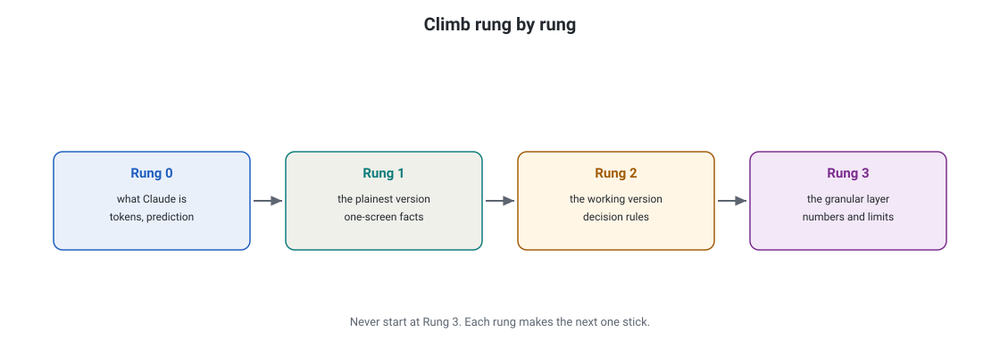
- Start at Rung 0. It defines the pieces.
- Rung 1 compresses each domain to one screen of facts.
- Rung 2 turns the facts into decision rules.
- Rung 3 adds the granular numbers the exam tests.
What breaks if a part fails: If you start at Rung 3, the numbers have nothing to hang on. They fall off by exam day.
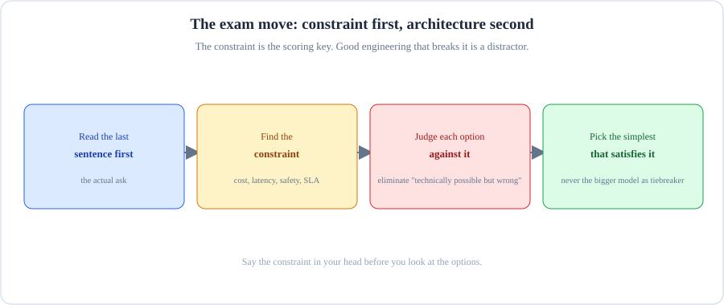
- First, name the binding constraint: latency, cost, correctness, or compliance.
- Start from the constraint: it picks the tool, which picks the pattern, which carries a trade-off.
- This is how the exam asks questions. It gives you a constraint. It asks which option meets the constraint.
If you memorize tools without constraints, every option looks correct. The exam picks the distractor. What breaks if a part fails:
- When a scenario arrives, ask which problem it is: cost, latency, reliability, context, or safety. Many answers will look technically correct. Only one answer fits the actual constraint. Read the constraint first, then the architecture.
- What is the simplest approach that satisfies the stated constraints? More agents, more tools, and more abstraction are not always better. Apply the simplicity test.
- Model selection is always a trade-off decision. It is not a size decision. Choosing the bigger model to be safe is one of the exam's favorite traps. Never default to the bigger model.
- Give each mistake a name: Guard-Instead-of-Remove, Wrong-Layer Diagnosis, Blunt-Instrument Optimization, Vibes-Based Evaluation. You can recognize a mistake you can name among options you see for the first time. Name the trap, not just the concept.
- Draw the system on paper. Candidates who pass draw architecture diagrams by hand. They map how the parts depend on each other.
- Explain your wrong answers out loud. Do not memorize the answer when you miss a practice question. Understand why the correct approach works better than your selected approach.
- Hands-on is not optional for Integration. Build a small MCP server. Break a RAG pipeline chunking on purpose. Watch a cache hit-rate change. You get judgment from touching the system.
The 2-week intensive plan (4+ hours a day)
This plan assumes 3+ years of architecture experience. It assumes some hands-on LLM exposure. Confirm your Partner Network eligibility on day 1. The plan takes approximately 60 hours total.
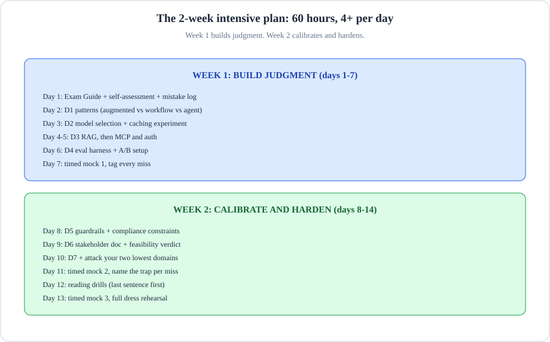
- Days 1 to 2: prereqs and warm-up. After that, one domain per day from day 3 to day 9, heaviest first.
- Days 10-12: Use the question bank. Repair the weak spots. Days 13-14: Do the timed mocks. Make an exam-day strategy.
- Every evening, complete question-bank items. Do not reread the material.
What breaks if a part fails: If the mocks move to the last night, you will have no time to repair what they find.
Week 1: build judgment (days 1–7).
- Day 1 (4h): Read the official Exam Guide v1.0 end to end. Rate yourself 1 to 5 in each of the 7 domains. Start a mistake log with five tags: Concept (you did not know it), Boundary (you knew it but used it in the wrong scenario), Reading (you missed "first step", "best", or "root cause"), Engineering (you picked workable but unreliable), Terminology.
- Day 2 (4h): Domain 1 is 17 percent of the exam. Select a pattern: augmented call, workflow, or agent. Do a drill with 10 scenario questions. Identify the constraint before you read the options.
- Day 3 (4h): Domain 2 is 13% of the exam. This domain includes hands-on tasks: model selection trade-offs and prompt caching. Use a static prefix first for prompt caching. Run a caching experiment and measure the difference.
- Day 4 (4h): Domain 3 part 1 is 19%. This domain covers RAG: chunking, indexing, and retrieval. Change the chunk size and the top-k value on paper. Predict the effect of these changes.
- Day 5 (4h): Domain 3 part 2. This part covers MCP, tool design, least privilege, and authentication. Exercise: Remove an unneeded tool from a design. Justify why removal is better than logging.
- Day 6 (4h): Domain 4 is 16% of the exam. The evaluation harness includes metrics (accuracy, latency, cost, safety), a small evaluation dataset, and an A/B setup. Learn that evaluations are acceptance criteria. Agree on these criteria before the build.
- Day 7 (4h): Do a timed mock exam 1. Score each domain. Tag every miss. For each miss, write why the correct approach works better. Do not write only the answer.
Week 2: calibrate and harden (days 8–14).
- Day 8 (4h): Domain 5 is 14% of the exam. It covers guardrail placement. It covers human review routed by stakes. It covers what GDPR, HIPAA, and FedRAMP each constrain. Practice separating disqualifying constraints from expensive constraints.
- Day 9 (4h): Domain 6 is 14% of the exam. Write a one-page architecture document for a non-technical stakeholder. Practice the feasibility verdict. This includes saying "no."
- Complete Day 10 (4h): Domain 7. This domain is 7 percent of the exam. Then complete the weak-domain mop-up: set up the Claude Code team, adjust the settings layers, and complete the debugging loop. Then address your two lowest-scoring domains.
- Day 11 (4h): Do a timed mock exam 2. For every wrong answer, write one sentence. Name the trap in the sentence.
- Day 12 (4h): Do scenario reading drills. Answer 40 questions under a timer. Read the last sentence first. This is the ask. Find the constraint. Eliminate options that are technically possible but wrong.
- Day 13 (4h): Do a timed mock 3. This is a dress rehearsal. Do it at the same time of day as the real exam. Use the full flag-and-review procedure.
- Day 14 (2–3h, light): Re-read your one-page domain summaries. Re-read your named-trap list. Rest. Do not study new material.
Exam-day tips
- Pace is 1:54 per item. The exam has 63 items. You have 120 minutes. Answer the items that you know on the first pass. Flag long scenarios and multi-response items. Then, return to these items.
- Read the last sentence first. This is usually the actual request. Then, read the stem for the constraint.
- Find the constraint before the options. Consider the cost, the latency, the reliability, the context, the safety, and the output format. Say these words in your head. Then, judge each option against these words.
- Eliminate "technically possible but wrong." These are exam-day tips. Do not use over-engineered solutions. Do not use solutions with high operational overhead. Do not use solutions that ignore the stated constraint.
- When two answers both look reasonable, pick the simpler architecture Select the solution that satisfies the requirements.
- Never choose the bigger model as the tiebreaker. The exam rewards the right-sized model. It rewards prompt caching. It rewards context strategy.
- On multi-response items, read the selection count first. Each item shows the number of responses to select. Select exactly that number of responses.
- 720 is a scaled score, not 72%. Anthropic does not publish the raw conversion. Do not do mental math during the exam. Answer every question.
- Answer how Anthropic would. If you are uncertain, select the answer that matches the official documentation. Do not select the cleverest hack.
- Use the full time. There is no bonus for finishing early. Review the flagged items. Only change an answer if you can state the reason.
- Tech-check the day before (for online proctoring): run Pearson's system test on the exact computer and network you will use. You need a private room, one screen, a webcam, a mic, a stable connection, and no VPN.
- The retake wait is real You must wait 14, 30, or 90 days between attempts. Treat each attempt as a single shot. Be careful, but do not panic.